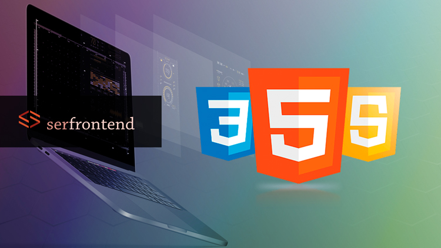

Habilidades
dentro del area IT,cuento con los conocimientos necesarios en tecnologias como HTML5 CSS3, lenguaje JavaScript para crear sitios atractivos e interactivos.Conocimiento basico de APIS,Fetch,JSon,Node.js, Frameworks,Git,Github, conocimiento basico en SQL para gestionar ingormacion,SASS entre otras.
Me gusta mucho la contabilidad, en la Facultad de ciencias Economicas y Administracion aprendi muchas habilidades y conocimientos que me dan la capacidad de realizar registraciones, conciliaciones, trabajar con planillas de fondo fijo, calculos matematicos,gestion de recursos y muchas habilidades de administracion en las cuales como ya mensione tengo preferencia por las relacionadas con la contabilidad.